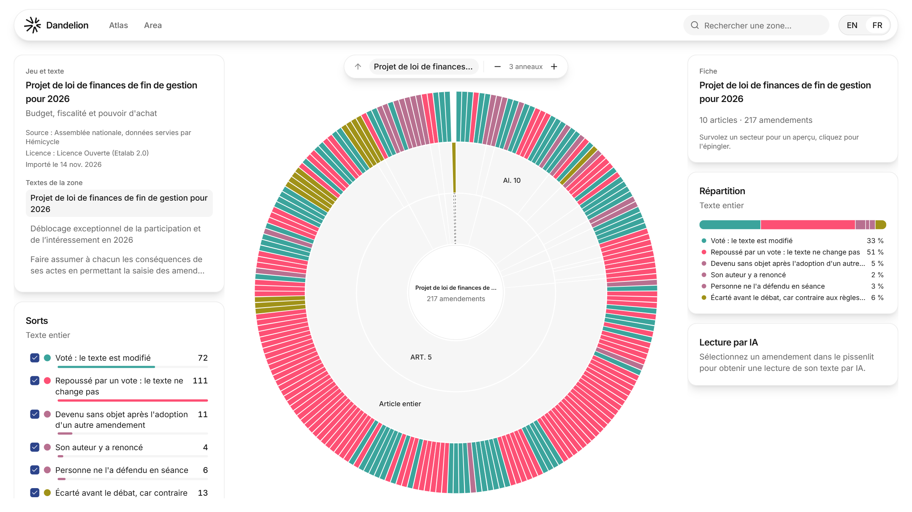
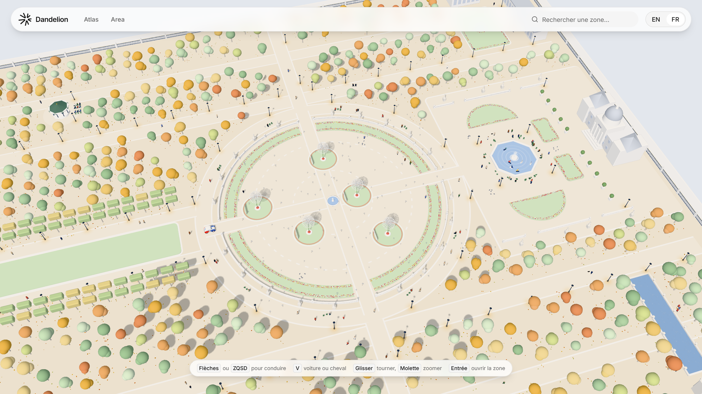
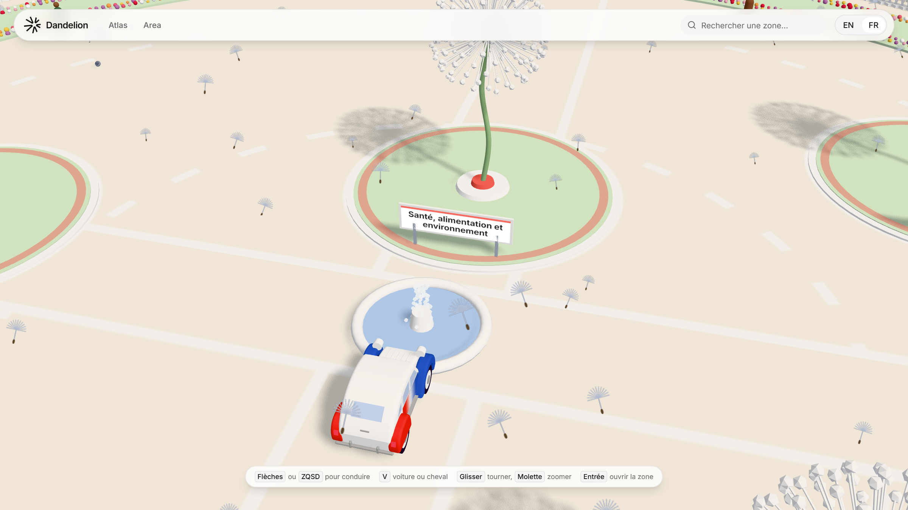
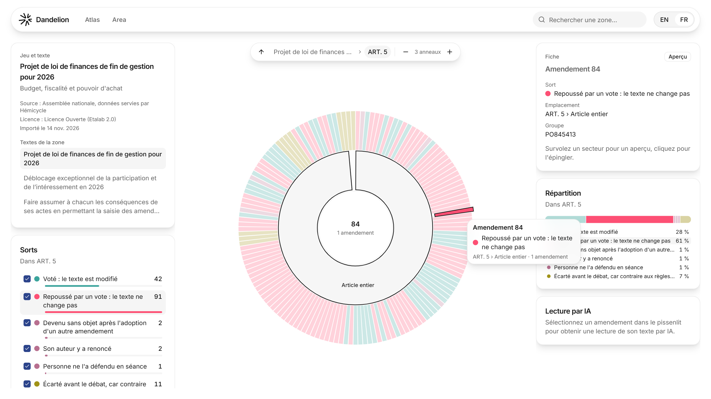
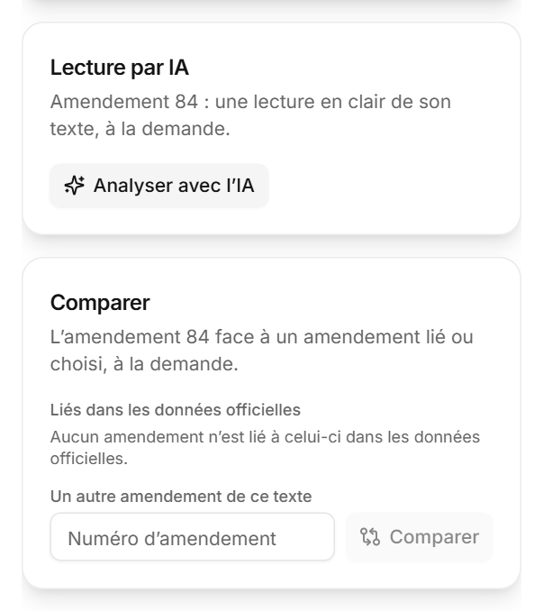

Dandelion
Voir, explorer et comprendre la fabrique de la loi.
Semer la donnée publique, faire éclore le débat.

Le problème
Des milliers d’amendements, aucune vue d’ensemble.
Chaque année, des milliers d’amendements réécrivent les lois qui nous touchent : budget, logement, santé. Les données sont ouvertes, mais on les lit en listes et en tableaux, sans structure ni fil conducteur.
217
amendements pour un seul texte de 10 articles
Projet de loi de finances de fin de gestion pour 2026
La solution
Dandelion rend un texte de loi lisible d’un coup d’œil.
Un framework de visualisation fondé sur la recherche en design et en dataviz.
- 01 Voir Le texte entier, sa structure et le sort de chaque amendement sur une seule vue.
- 02 Explorer Du texte à l’article, de l’alinéa à l’amendement, d’un simple zoom.
- 03 Comprendre Une lecture en clair par IA, adaptée à chacun, à la demande.


L’entrée
On entre au Parlement par son jardin.
Le jardin du Luxembourg en 3D, au pied du palais du Sénat : on sait d’emblée où l’on est. Chaque thème est un pissenlit ; on conduit de fleur en fleur, puis on plonge dans celle qui intrigue.
Plutôt qu’un portail austère, une exploration qui commence par le jeu.
La visualisation
Un texte de loi, un pissenlit.
Retenu après notre état de l’art des visualisations arborescentes, le sunburst montre d’un seul regard la structure, le volume et l’issue. On zoome, on survole, on filtre par sort, on partage la vue par un lien.
- Centre → bord texte, articles, alinéas, amendements
- Angle nombre d’amendements
- Couleur sort : adopté, rejeté, retiré…

Les données
Des API Hémicycle à une base unifiée.
Notre pipeline extrait les API Hémicycle de l’Assemblée nationale et factorise textes, articles, alinéas, amendements et sorts dans une architecture unifiée de huit tables. L’interface la transforme en pissenlit didactique et interactif.
- HémicycleAPI open data de l’Assemblée nationale
- PipelineExtraction, factorisation, étiquetage thématique
- Supabase8 tables, lecture publique protégée par RLS
- InterfaceSunburst didactique, ergonomique, interactif
- datasets
- textes
- articles
- alineas
- amendements
- sorts
- tags
- tag_links
L’IA
L’IA au service de la pédagogie.
Un clic sur un amendement : des modèles de langue servis par Featherless en proposent une lecture en clair et le comparent à un amendement voisin. C’est une aide à la lecture, jamais une source officielle : le texte de l’Assemblée fait foi.
Aide à la lecture · pas une source officielle

Démo
Ce qui marche aujourd’hui.
- 5zones thématiques
- 24textes de loi
- 1 308amendements
- 8sorts en langage clair
-
1Conduire jusqu’à un pissenlit
-
2Plonger dans le texte
-
3Cliquer un amendement
Données réelles de l’Assemblée nationale, importées le 14 novembre 2026.
Impact
Pour qui, et la suite.
- CitoyensVoir ce qui change dans les lois qui les concernent.
- JournalistesRepérer en un regard où se joue la bataille.
- Collaborateurs parlementairesSuivre un texte et ses amendements sans tableur.
- EnseignantsMontrer la fabrique de la loi en classe.
Ensuite
- Le Sénat et la navette entre les deux chambres
- Plus de textes, importés au fil des débats
- Le framework ouvert à d’autres données publiques
Faire de chaque loi un objet que l’on voit, que l’on explore et que l’on comprend.
- Démo
- [ lien de démo à compléter ]
- Équipe
- [ noms et rôles à compléter ]